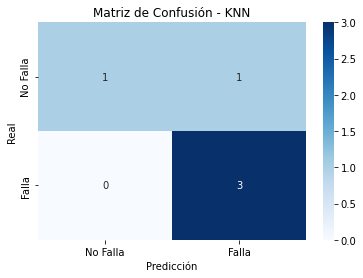

Desarrollo de modelos#
En esta seccion se desarrollaran los modelos de prediccion para la investigacion. Al tener un problema de clasificacion, se trabajaran los siguientes modelos adicionales al modelo original. Estos modelos de clasificacion son los siguientes:
KNN → KD-Trees, Ball Trees, FAISS.
Ridge/Lasso → Solver optimizado saga.
Naive Bayes → partial_fit() para entrenamiento por lotes.
XGBoost → tree_method=’hist’ y early_stopping_rounds.
SVM → SGD SVM (SGDClassifier) , LinearSVC en vez de SVC(kernel=’linear’), RBF con Random Fourier Features
En las siguientes lineas de codigo, se encontrara el desarrollo de los modelos.
import pandas as pd
df = pd.read_csv("metricas_camiones.csv")
df
| Unnamed: 0 | Equipo | Suspension | Falla | mean_presion | sd_presion | max_presion | min_presion | peaks_presion | median_presion | pressure_change_rate | high_duration_presion | cv_presion | num_trend_changes | |
|---|---|---|---|---|---|---|---|---|---|---|---|---|---|---|
| 0 | 0 | 022-740 | L | 1 | 21641.506274 | 5260.175821 | 34473.8 | 1631.8 | 379 | 21790.10 | 2585.327605 | 30.874722 | 0.243060 | 4101 |
| 1 | 1 | 022-740 | R | 0 | 19801.161056 | 5206.772627 | 49117.1 | 2005.2 | 120 | 20042.30 | 2664.393305 | 26.602222 | 0.262953 | 4119 |
| 2 | 2 | 022-826 | L | 0 | 26095.888559 | 5403.453187 | 42847.2 | 3305.6 | 1290 | 26346.10 | 2305.921631 | 185.937778 | 0.207061 | 3429 |
| 3 | 3 | 022-826 | R | 1 | 17643.687250 | 5294.362156 | 38931.1 | 2166.7 | 92 | 17444.50 | 2437.081836 | 11.661389 | 0.300071 | 3247 |
| 4 | 4 | 022-830 | L | 0 | 20735.948609 | 8770.715037 | 42379.4 | 0.0 | 232 | 22112.20 | 2552.602642 | 13.269722 | 0.422971 | 1116 |
| 5 | 5 | 022-830 | R | 1 | 20362.288119 | 7051.834262 | 41785.6 | 572.2 | 173 | 20813.90 | 2943.257877 | 66.706111 | 0.346318 | 1143 |
| 6 | 6 | 022-832 | L | 1 | 26049.137374 | 5469.099930 | 44803.9 | 3952.2 | 2598 | 25959.20 | 2615.794375 | 341.459167 | 0.209953 | 6800 |
| 7 | 7 | 022-832 | R | 1 | 19161.502664 | 5473.768538 | 39605.6 | 1970.6 | 279 | 19073.05 | 2668.015273 | 34.658889 | 0.285665 | 6733 |
| 8 | 8 | 022-833 | L | 0 | 25824.587161 | 5795.656571 | 43979.4 | 1314.4 | 1305 | 26006.70 | 2230.039001 | 280.631389 | 0.224424 | 3329 |
| 9 | 9 | 022-833 | R | 1 | 17070.491458 | 5589.978325 | 36353.5 | 1295.6 | 87 | 16836.10 | 2378.520038 | 11.404444 | 0.327464 | 3218 |
| 10 | 10 | 022-836 | L | 0 | 21702.262692 | 7664.032764 | 43643.9 | 1408.2 | 1676 | 22894.50 | 2423.157821 | 179.615327 | 0.353144 | 9722 |
| 11 | 11 | 022-836 | R | 1 | 22997.799439 | 12907.443805 | 49000.0 | 945.0 | 2933 | 19883.30 | 2107.087760 | -1862.262724 | 0.561247 | 8631 |
| 12 | 12 | 022-843 | L | 1 | 23880.691775 | 7094.501721 | 46830.0 | 2646.7 | 5115 | 24574.75 | 2311.084536 | 838.029167 | 0.297081 | 15650 |
| 13 | 13 | 022-843 | R | 1 | 20014.720807 | 6402.293117 | 43557.8 | 1387.8 | 1717 | 19850.80 | 2769.822974 | 288.799167 | 0.319879 | 15363 |
| 14 | 14 | 022-847 | L | 0 | 20982.545038 | 10339.650395 | 47375.0 | 0.0 | 3717 | 23416.10 | 2661.386818 | 397.419167 | 0.492774 | 11480 |
| 15 | 15 | 022-847 | R | 1 | 17767.302485 | 7033.945196 | 41377.2 | 991.7 | 700 | 18290.50 | 2656.441145 | 160.180833 | 0.395893 | 13100 |
| 16 | 16 | 022-848 | L | 0 | 23925.447116 | 7620.257833 | 44067.2 | 1462.2 | 1040 | 24912.20 | 2300.450332 | 211.469167 | 0.318500 | 3245 |
| 17 | 17 | 022-848 | R | 1 | 15576.650046 | 6830.255872 | 37453.3 | 0.0 | 111 | 15730.00 | 2577.724548 | 11.419167 | 0.438493 | 3000 |
| 18 | 18 | 022-849 | L | 0 | 15996.111193 | 8920.978051 | 34473.8 | 0.0 | 906 | 18072.90 | 2448.987047 | 39.594167 | 0.557697 | 18831 |
| 19 | 19 | 022-849 | R | 1 | 18118.352544 | 9139.968560 | 53195.0 | 2166.5 | 2208 | 20311.20 | 2860.422343 | 302.985000 | 0.504459 | 19726 |
| 20 | 20 | 022-831 | R | 0 | 21287.314530 | 6942.476128 | 37864.4 | 1170.6 | 183 | 22475.60 | 2349.709188 | 984.842500 | 0.326132 | 2516 |
Cargamos los datos Pre-procesados para el desarrollo de los modelos.
Modelo KNN#
En las siguientes lineas de codigos, aplicaremos los modelos KD-Trees, Ball Trees Y FAISS.
import pandas as pd
import numpy as np
import seaborn as sns
import matplotlib.pyplot as plt
from sklearn.model_selection import train_test_split, GridSearchCV
from sklearn.preprocessing import StandardScaler
from sklearn.pipeline import make_pipeline
from sklearn.neighbors import KNeighborsClassifier
from sklearn.metrics import accuracy_score, classification_report, confusion_matrix
from sklearn.neighbors import KNeighborsClassifier
X = df.drop(columns=["Equipo", "Suspension", "Falla"])
y = df["Falla"]
X_train, X_test, y_train, y_test = train_test_split(X, y, test_size=0.2, random_state=42)
pipe = make_pipeline(StandardScaler(), KNeighborsClassifier())
param_grid = {
"kneighborsclassifier__n_neighbors": [3, 5, 7, 9, 11], # Número de vecinos
"kneighborsclassifier__weights": ["uniform", "distance"], # Pesos de los vecinos
"kneighborsclassifier__metric": ["euclidean", "manhattan", "minkowski"], # Distancias
"kneighborsclassifier__algorithm": ["ball_tree", "kd_tree"] # Algoritmos de búsqueda
}
# 6️⃣ Realizar búsqueda de hiperparámetros con GridSearchCV
grid_search = GridSearchCV(pipe, param_grid, cv=5, scoring="accuracy", n_jobs=-1)
grid_search.fit(X_train, y_train)
# 7️⃣ Evaluar el mejor modelo
best_model = grid_search.best_estimator_
y_pred = best_model.predict(X_test)
# 🔹 Matriz de Confusión
conf_matrix = confusion_matrix(y_test, y_pred)
# 🔹 Visualizar la Matriz de Confusión
plt.figure(figsize=(6, 4))
sns.heatmap(conf_matrix, annot=True, fmt="d", cmap="Blues", xticklabels=["No Falla", "Falla"], yticklabels=["No Falla", "Falla"])
plt.xlabel("Predicción")
plt.ylabel("Real")
plt.title("Matriz de Confusión - KNN")
plt.show()
# 🔹 Métricas adicionales
print("Best cross-validation score: {:.2f}".format(grid_search.best_score_))
print(f"Mejor combinación de hiperparámetros: {grid_search.best_params_}")
print("Reporte de clasificación:\n", classification_report(y_test, y_pred))

Best cross-validation score: 0.68
Mejor combinación de hiperparámetros: {'kneighborsclassifier__algorithm': 'ball_tree', 'kneighborsclassifier__metric': 'euclidean', 'kneighborsclassifier__n_neighbors': 11, 'kneighborsclassifier__weights': 'distance'}
Reporte de clasificación:
precision recall f1-score support
0 1.00 0.50 0.67 2
1 0.75 1.00 0.86 3
accuracy 0.80 5
macro avg 0.88 0.75 0.76 5
weighted avg 0.85 0.80 0.78 5